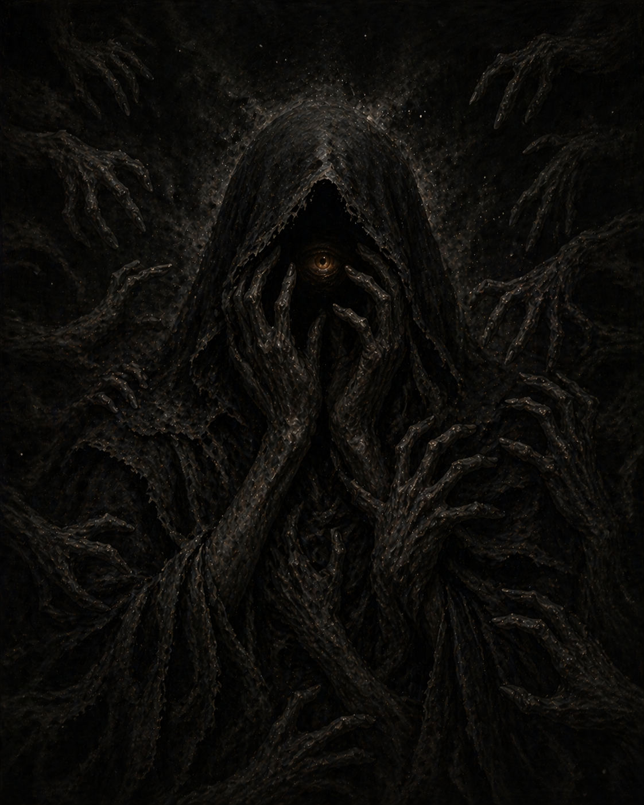
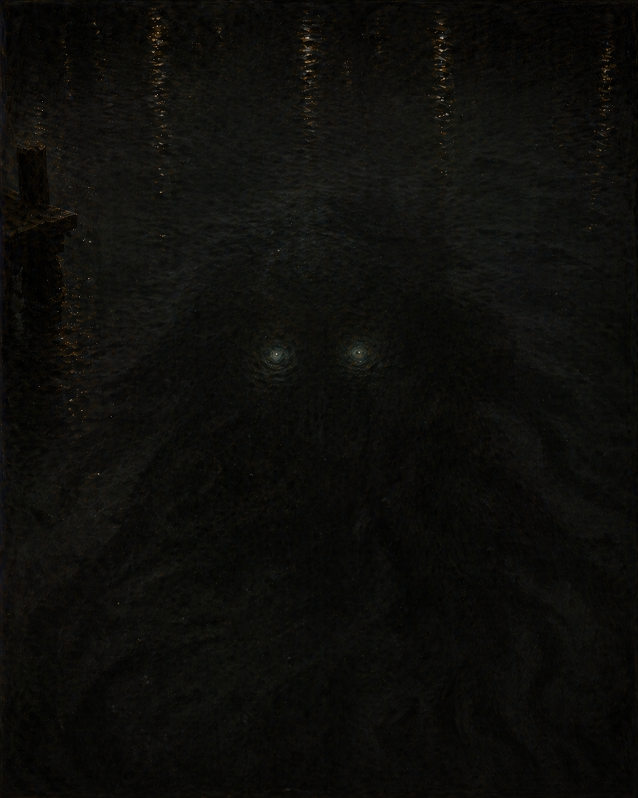
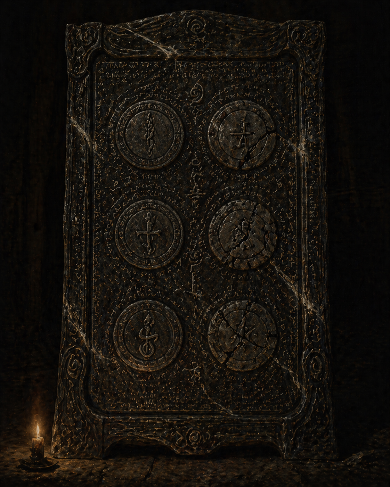
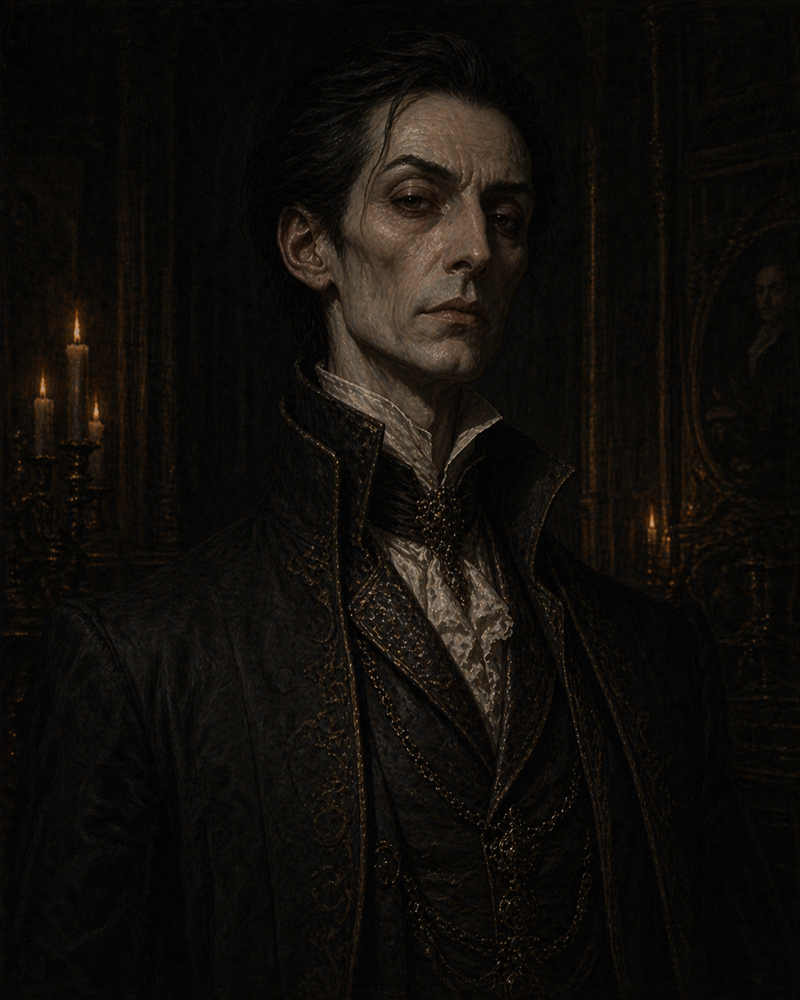

The Story
The forces, factions, and ancient machinery the crew has stumbled into
The Situation
Current Understanding
Lord Scurlock is an ally helping them oppose Setarra and contain a dangerous occult threat. He has directed them to retrieve the Reliquary, and says two more components are needed.
The Truth
Scurlock is beholden to Setarra. He's directing the crew to collect the very items she needs. When he has all three, he plans to hand them over in exchange for his freedom. He doesn't want to destroy the city � but he'll endanger it to save himself.
Major Elements

Setarra
Demon of Dust, Hands & Deals
The primary antagonist. Patient, distributed, and operating through agents who don't know each other. She's found the crew. She wants the Ledger.

Something Below
A presence in the water � ancient, unnamed
Something is out there in the harbor. The crew has glimpsed it � in the black water outside the train windows, in the weight of the Ledger. They don't know what it is yet.

The Drowned Ledger
Currently held by Scurlock
An ancient legal document connected to Something Below. One of three ritual components Scurlock says are needed. Not treasure � its weight hasn't been fully mapped yet.

Lord Scurlock
The crew's patron � ancient noble, long memory
He knows how to get Setarra off their backs � it requires three ritual components, and he's directing the crew to collect them. What exactly they're for, he hasn't said.
GM Lore

The Harbor Compact
The six seals, the Watcher, the ritual
Full compact lore: the three intact bloodlines, the three cracked seals, Setarra's play, the ritual components, and what failure means for the city.
The Spirit of the City
Nascent, afraid, resisting
What the wrong echoes and watching faces are. Its relationship with the Watcher, with Scurlock, with the crew. The Conductor as its instrument. How it manifests at the table.
The Ash-Hand Compact
Tier II — Occult Conspiracy
Setarra's distributed network of cells. Most members don't know the full shape of it. Active operations, faction structure, key NPCs, and the Jared clock.
Campaign Arc
- Now: Crew collecting ritual components under Scurlock's direction, unknowingly serving Setarra
- Mid-campaign: Scurlock's betrayal � he attempts to deliver the components to Setarra
- Endgame: Setarra seizes the harbor compact through a mortal intermediary (likely Jared). The Tide Tithe event. Slow collapse begins.
- Campaign 2: Recover the Ledger, repair the compact, deal with what got through while the Watcher was compromised.